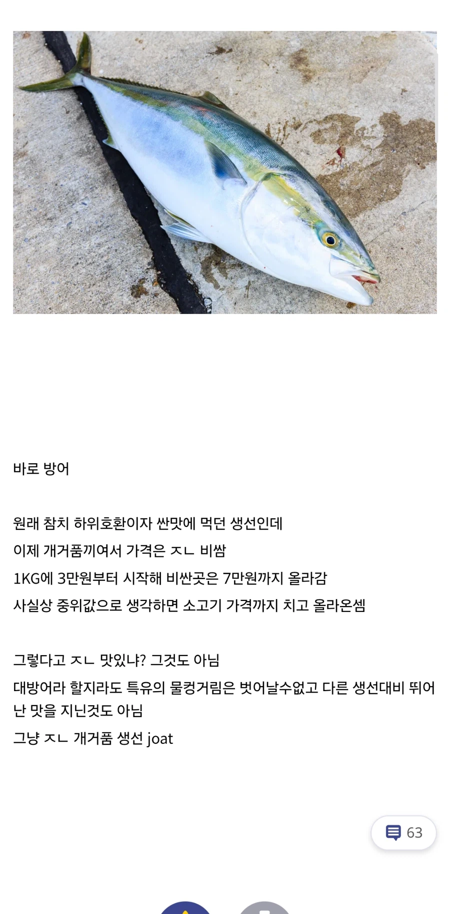

한국에서 은근 거품인 생선
댓글
방어보단 삼치 선어회가 마싯더라
5점까지 괜찮고 그 이후는 광어 압승이라고 생각
공격은 없냐
유용한 정보
개인적으로 흙내나서 불호임
솔직히 왜 그돈주고 먹는지 모르겠음;;;
갈치조림이 최고다
참기름빨이잖아
10년전에는 정말 싸고 맛있는 생선이었는데
지금은 ㅆㅂ 그 가격이면 참치먹지 방어를 왜 먹음???
겨울 한정 식감 원툴
방어는 애초에 전갱이과라... 존나큰 전갱이라 생각하면 됨. 전갱이도 호불호 갈리잖아 특유 비린맛 때문에? 그래서 특히 방어는 피도 잘 빼야 맛이 좋은거고...
항상 참치랑 비교하는데, 참치랑 비교할 껀덕지가 없는 생선임. 종 자체가 달라서... 뭐 참치도 비린내 심하니까 도찐개찐인가...?
전갱이는 튀김으로 주로먹는 이유가있지 ㅋㅋㅋ
겨울숭어가 이김
ㅇㅈ 숭어가 걍 압살함
밀치 맞나?
특정지역에서만 먹을수있어서 넘나아쉽 ㅜㅜ
너 맛잘알이구나?
ㄹㅇ 숭어 다들 ㅈ으로 봐서 그렇지 개맛남
공격이 이김
요즘 어획량 어마어마하다는데 정부에서 제한 걸어놔도 비싼이유 모르겠음..
옛날 금색의 갓슈에서 방어란 생선 첨 알았는데
난 그래도 방어 먹기는 함 참치는 근처에 제대로 해동 안해주고 죄다 냉동이라.
애초에 예전에는 쳐주지도 않던 생선인 걸로 아는데 어느 순간 바이럴 마케팅 된 것 같음
10년전만해도 이정돈아니었는데
예전엔 수요가 적고 해안도시는 가격도 가성비라 잘 먹었는데
지금은 죄다 찾아서 귀한몸이라 슬픔
아무거나 잘 주워처먹는 애들을 위해서 프리미엄 존나 맛있다 함 처묵어봐라 전략 써서 돈버는거지
어차피 방어든 붕어든 뭐든 다 맛있다고 잘처먹는 애들이라 전략이 먹힐 수 밖에 없음.. ㄹㅇ
방어대뱃살초밥은 맛있더라
히라스 맛있엉
나도 이거 찾아먹는거 노이해. 이거랑 가을 전어랑 거품 투탑임.
대방어 한접시에 4만원할때나 먹었지 요즘은 씹
대방어 ㅈ 노맛임
취향 차이인가봐. 맛있는 집 가야한다 대방어 큰 거를 먹어야한다 여긴 작다 해서 여러번 먹었는데 다 개소리였어